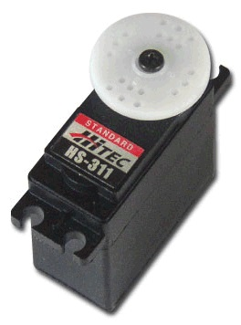
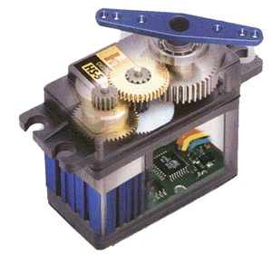
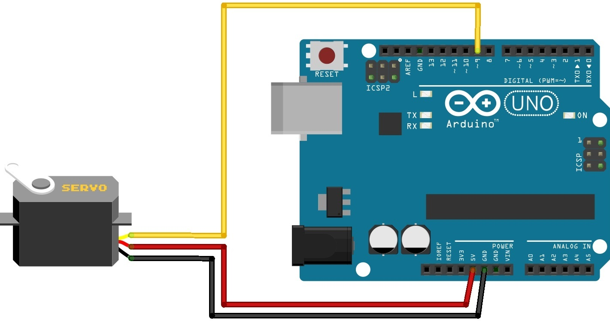

I motori servo, sono attuatori speciali muniti di un sistema di feedback che permette di controllarne la posizione angolare, è quindi possibile ruotarli in una posizione specifica e mantenerla fino a che lo si desidera. Contengono tutta l’elettronica che serve per comandarli: sistema di feedback, logica e stadio di potenza. Possono ruotare in entrambi i sensi, e l’elettronica che li comanda è in grado di variarne la velocità in modo efficiente per garantire una buona precisione nel posizionamento. La maggior parte dei servomotori può ruotare di 180°, ma esistono modelli da 45°, 90° ed anche 360°. Ne esistono di varie misure e potenze, dai micro servocomandi per modellismo a servo industriali capaci di spostare tonnellate. Vengono comandati da un segnale PWM a 50Hz con impulsi lunghi da un minimo di 1mS ad un massimo di 2mS dove 1mS corrisponde a 0° e 2mS a 180°.


attach() Permette di impostare il pin col quale comandare il servomotore. attached() Controlla se il servo è collegato ad un pin. detach() Rimuove il collegamento tra l’oggetto Servo e il pin a cui era legata. read() Legge la posizione angolare del servo, restituisce l’ultimo valore passatogli con write(). write() Impartisce al servo l’angolo a cui posizionarsi, su servo a rotazione continua imposta la velocità di rotazione 0=velocità massima in un senso, 90=fermo, 180=velocià massima nella direzione inversa. writeMicroseconds() Imposta la velocità di rotazione del servo, in un servo standard il valore va da 1000 a 2000, in un servo a rotazione continua si comporta allo stesso modo della write().
#include <Servo.h>
Servo myservo;
int pos = 0;
void setup()
{
myservo.attach(9); // Utilizza il pin 9 come PWM per comandare il Servo
}
void loop()
{
for(pos = 0; pos <= 180; pos += 1) // Aumenta di 1° la posizione fino a 180°
{
myservo.write(pos);
delay(15);
}
for(pos = 180; pos>=0; pos-=1) // Diminuisce di 1° la posizione fino a 0°
{
myservo.write(pos);
delay(15);
}
}